Añadimos la dirección IP a nuestra lista /etc/hosts
Echo una vista por encima a la página
Encuentro un admin login
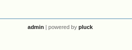
No consigo bypassearlo de primeras
Mientras realizo un escaneo de puertos
Encuentro que esta el puerto 22, 80 y 3000
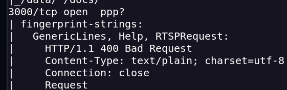
Accedo al puerto 3000 y realizo un escaneo de directorios con gobuster
Encuentro información la cual me permiete encontrar un hash almacenado
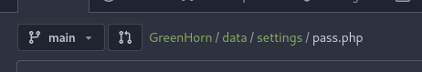
<?php
$ww = 'd5443aef1b64544f3685bf112f6c405218c573c7279a831b1fe9612e3a4d770486743c5580556c0d838b51749de15530f87fb793afdcc689b6b39024d7790163';
?>
Lo desencrypto con John the Ripper
Accedo al login que mencioné antes y accedo como admin
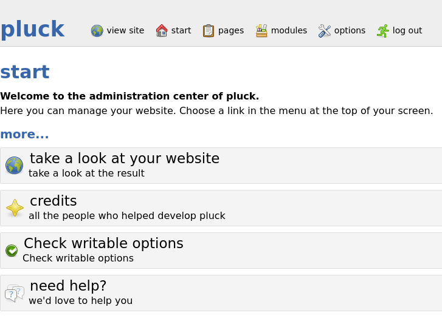
La versión 4.7.18 de pluck tiene una vuln de RCE https://www.exploit-db.com/exploits/51592
La cual me permite subir un módulo en .zip para poder ejecutar una reverse shell
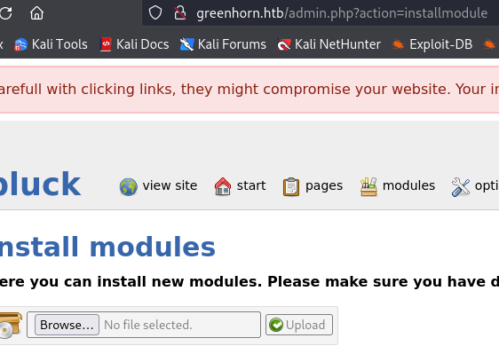
Por falta de archivos no me dejaba subir el reverse shell
Por lo que hice un git clone git clone http://greenhorn.htb:3000/GreenAdmin/GreenHorn.git
Ahí seleccioné un módulo y modifiqué un archivo .php con el reverse shell .php de pentestmonkey
Obtengo una reverse shell
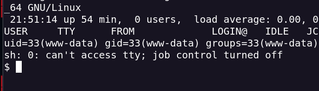
Upgrade de la shell
python3 -c 'import pty; pty.spawn("/bin/bash")'
Estoy con el usuario www-data
No puedo acceder a la flag user.txt por que no tengo el usuario junior
Busco si tiene algún archivo
find / -type f -user junior 2>/dev/null
find / -type f -user junior 2>/dev/null
No encuentro nada interesante
Pruebo con la pass con la que entré al admin
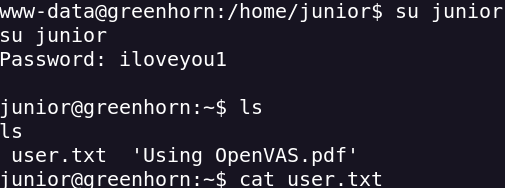
Al pasarme el archivo veo que está oculto
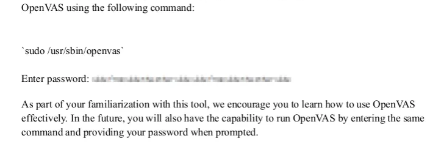
Convertimos a imagen usando pdfimages
pdfimages "./Using OpenVAS.pdf" greenhorn
ls greenhorn-000.ppm
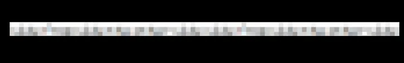
Está pixelada por lo que usamos Depix
Depix es una tecnica para recuperar texto de una screenshot pixelada
python3 depix.py \
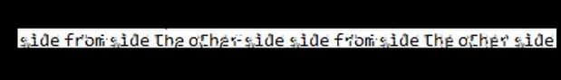
Hacemos cat a la root_pass
Obtenemos el user root
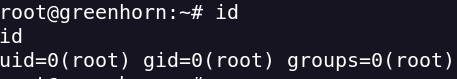